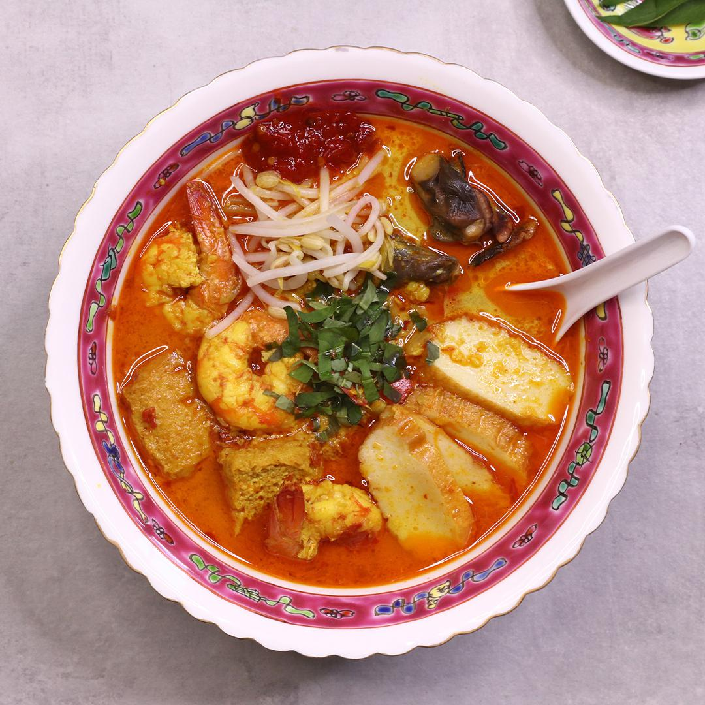

INGREDIENTS
- 8 king prawns, de-shelled
- 1 tablespoon palm sugar
- 1 tablespoon fish sauce
- 1 ¼ cups coconut milk
- ¼ lb tofu puffs, tau pok, halved
- 2 tablespoons cooking oil
- 8 king prawns, head and shells
- 5 cups water
- 2 cups chicken stock
- 2 tablespoons cooking oil
- 15 dried chillies
- 2 red chillis
- 3 tablespoons dried shrimp, soaked
- 1 teaspoon shrimp paste, belacan
- 8 cloves garlic
- 2 cups vermicelli rice noodle, cooked
- 1 cup bean sprout, blanched
- 1 bunch laksa leaves
- 2 tablespoons chilli paste
PREPARATION
- Remove the heads and shells from prawns and set aside in a bowl, then devein and set the prawn meat aside in a separate bowl.
- To make the prawn stock, add cooking oil to a large saucepan on medium-high heat. Add prawn heads and shells then stir for 5 minutes, crushing the heads to release the flavour.
- Add water and chicken stock, then simmer for 45 minutes allowing the stock to reduce.
- Remove prawn shells then strain the broth into a bowl through a sieve.
- In a food processor, add dried chilli, red chilli, dried shrimp, shrimp paste (belacan), garlic, shallot, ginger, blue ginger (galangal), turmeric root, candle nuts and lemongrass stalk, then pulse for 5 minutes until a thick paste forms.
- Add cooking oil to a large saucepan then add the laksa paste and cook for 5 minutes until fragrant. Add palm sugar, fish sauce, coconut milk and prawn stock stirring to combine. Simmer the mixture for 15 minutes then add the prawns and tofu puffs, cooking for 3 minutes to finish.
- To serve, add vermicelli noodles to a bowl then top with bean sprouts, cockles and slices of fish cake. Ladle in scoops of the laksa making sure to include tofu puffs and prawns. Top with a handful of finely chopped laksa leaves and optional chilli paste.